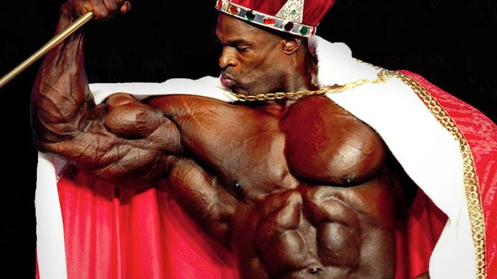

Mister Olympia es la principal y máxima competición de culturismo profesional, se celebra anualmente y alberga a los mejores culturistas de todo el mundo. Fue creada por Joe Weider,y es organizada por la Federación Internacional de Fisicoculturismo (IFBB). Desde sus inicios se le considera la competición con mayor nivel y la que dilucida al mejor culturista del mundo. Los competidores que participan en este certamen salen de una exigente clasificación previa. 